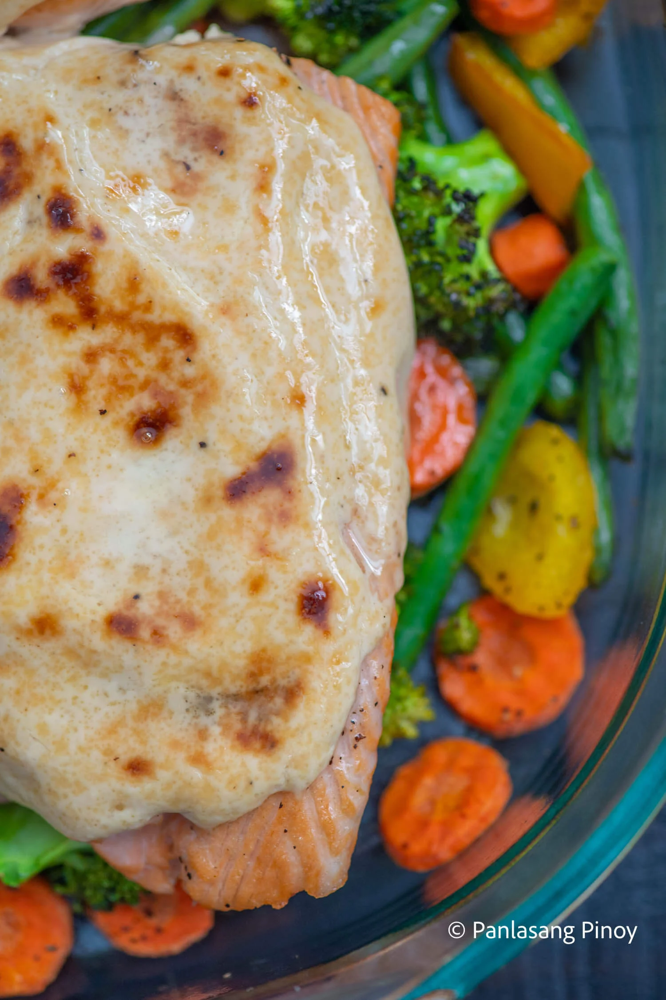

Creamy Baked Salmon Recipe

Calories: 1503kcal | Carbohydrates: 20g | Protein: 99g | Fat: 112g | Saturated Fat: 30g | Polyunsaturated Fat: 16g | Monounsaturated Fat: 39g | Cholesterol: 360mg | Sodium: 603mg | Potassium: 2779mg | Fiber: 5g | Sugar: 7g | Vitamin A: 9923IU | Vitamin C: 118mg | Calcium: 294mg | Iron: 5mg
Many delicious meals have been served piping hot and straight from the oven. Baking trays and pans are incredibly popular cookware, and this is even more true around the holidays! With numerous gatherings of friends and family to attend to, party trays are all the rage. From sweet desserts to those mouthwateringly savory, a good oven can make any dish extra special. And even when you don’t have extra company around, you don’t need an excuse to bake a delicious treat for yourself. Take this creamy baked salmon, for one!
Ingredients
- 3 lbs salmon fillet skin removed
- ½ cup Lady’s Choice Mayonnaise
- 7 ounces all-purpose cream
- ½ cup cheddar cheese shredded
- ¼ teaspoon garlic powder
- 1 lemon
- 1 ½ cups broccoli florets
- 1 bell pepper chopped
- 2 carrots sliced
- 20 long green beans
- 6 Tablespoons extra virgin olive oil
- Salt and ground black pepper to taste
Instructions
- Season both sides of the salmon with salt and ground black pepper. Set aside.
- Arrange carrot, bell pepper, broccoli, and long green beans on a baking tray. Sprinkle ground black pepper and salt. Drizzle with olive oil. Toss. Spread the vegetables evenly in the baking pan. Roast in the oven for 5 minutes.
- Heat remaining olive oil in a pan. Fry both sides of the salmon for 2 minutes. Squeeze half a lemon over the salmon. Set aside.
- Make the dressing by heating the all-purpose cream in a saucepan (use low heat setting). Turn the heat off. Add cheese and then stir until it melts. Add salt, onion powder, and garlic powder. Squeeze the remaining lemon. Stir until well blended. Add Lady’s Choice Mayonnaise. Stir.
- Remove the roasted vegetables from the oven. Arrange the salmon on top of the vegetables and then spread the dressing all over the salmon.
- Preheat oven to 350F. Bake the salmon for 12 minutes.
- Remove from the oven and serve. Share and enjoy!